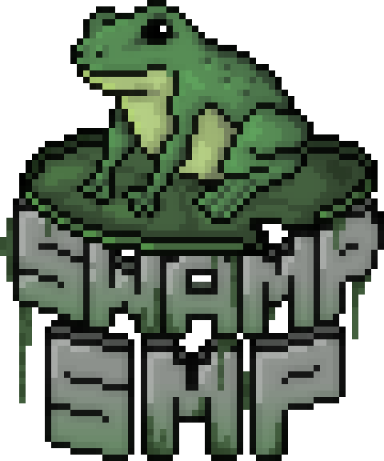
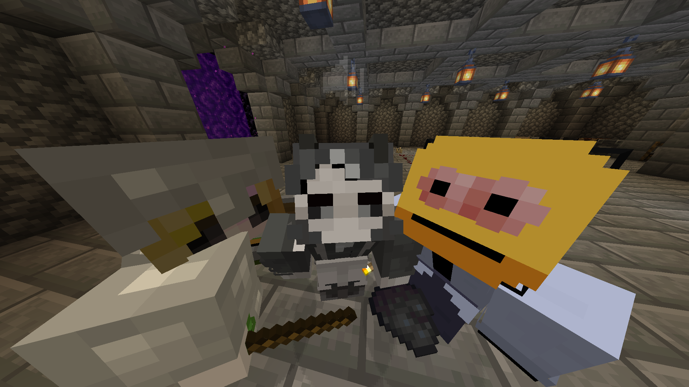
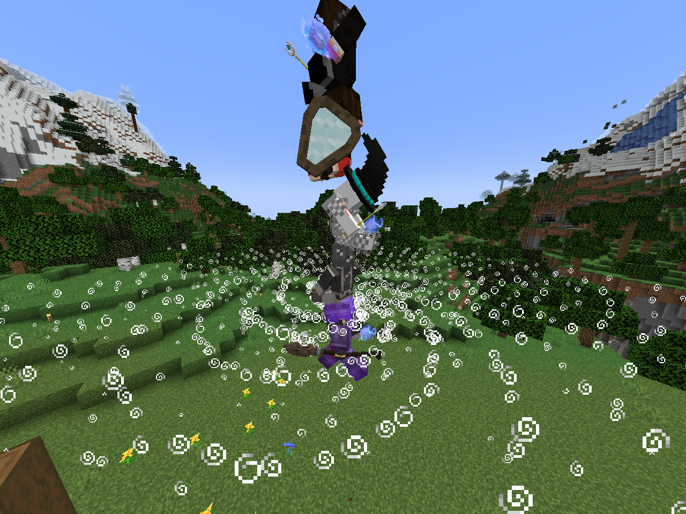
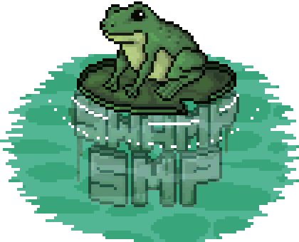

<!--
 Quara Theme by OllieJW (https://olliejw.me)
 License - https://olliejw.me/tos
-->

<!DOCTYPE html>
<head>
  <link rel="icon" href="img/favicon.png">
  <title>Главная | Swamp SMP</title>
  <meta name="viewport" content="width=device-width, initial-scale=1, maximum-scale=1">
  <meta name="title" content="Swamp SMP">
  <meta name="description" content="">
  <meta name="keywords" content="Swamp SMP, SwampSMP, Swamp-SWP, swamp-smp.ru">
  <meta name="theme-color" content="#4bb4f1">

  <!-- Edit this to change staff cards! -->

  <!--
	Notice:
	When you make changes to config,
	add ?v and a random number to config.css/js
	Example: <link rel="stylesheet" href="config.css?v=100">
  -->

  <script src="https://code.jquery.com/jquery-3.6.0.js"></script>
  <script src="https://cdn.jsdelivr.net/npm/handlebars@latest/dist/handlebars.js"></script>
  <script src="https://mcapi.us/scripts/minecraft.min.js"></script>
  <script src="js/fireflies.js"></script>
  <script src="js/main.js"></script>
  <script src="config.js"></script>
  
  <script>tosAgreed = false</script>

  <link rel="stylesheet" href="https://cdnjs.cloudflare.com/ajax/libs/font-awesome/6.0.0-beta2/css/all.min.css"/>
  <link rel="stylesheet" href="https://fonts.googleapis.com/css?family=Poppins|Raleway|Quicksand">
  <link rel="stylesheet" href="css/style.css">
  <link rel="stylesheet" href="config.css">
</head>

<body>

  <div id="target"></div>

  <script id="template" type="text/x-handlebars-template">

  <header>
    <div class="hero" id="hero">
      <a href="https://swamp-smp.ru"><h1 style="padding-top: 3%;"></h1></a>
	  <div id="pinned">
        <div class="pinned-card shrink shrink-pinned">
          <strong>Меню</strong>
          <a href="index.html" class="btn">Главная</a>
          <a href="https://swamp-smp.online" class="btn">Вики</a>
          <a href="gallery.html" class="btn">Галерея</a>
          <a href="#social" class="btn">Соц. сети</a>
        </div>
      </div>
	</div>
  </header>

  <section class="light">
    <p class="enlarge">
      <strong>О нас</strong>
      Мы команда Swamp-SMP, наша основная задача сделать сервер, где всем будет комфортно находиться и играть.
Сервер где все решается с помощью голосования и каждый способен поменять лор и игру.
Сервер, который приютит у себя самых творческих и интересный личностей и не только по тематики манкрафт.
    </p>
    <p class="enlarge">
      <strong>История</strong>
      {{server_name}} зародился в феврале 2022 года, он был создан людьми из 3 серверов, а в дальнейшем в него приходили и другие сервера, но администрация была только одна все время, это Johnny.

На данный момент история свамп-смп уже переваливает за пол года и мы медленно но верно движемся по своему пути, стать великим сервером, без доната, для всех игроков, где администрация не будет творить дичь и банить просто потому что ты обидел его друга.
    </p>
    <p class="enlarge">
      <strong>Как попасть на {{server_name}}?</strong>
В начале вы пройдете проверку на Исток-очка. Затем вас пустят на основной ДС, где вы должны будете написать анкету своего персонажа.
    </p>
   </section>

  <section class="dark">
    <h1>Преимущества</h1>
    <div class="feature right">
      
      <p class="enlarge">
        <strong>Расы</strong>
На нашем сервере, для лучшего ролеплея и погружения в геймплей присутствует плагин на расы, позволяющий более правильно передать вашего персонажа.
Его способности, слабые и сильные стороны, а так же прикольные фишки.
      </p>
    </div>
    <hr>
    <div class="feature left">
      
      <p class="enlarge">
        <strong>Магия и оружие</strong>
        На сервере так же присутствуют новые механики боя, ибо с добавлением магии и нового оружия обычный пвп потерял свой вес как вид боя.
Вы можете изучить 5 школ магии, начиная от магии разрушения, заканчивая некромантией и изменением пространства.
Так же если вы не любитель магии и предпочитаете больше холодному оружию огнестрел, то и мушкеты у нас имеются.
Тес самым вы можете сами выбрать как будет сражаться ваш персонаж, и чему он будет отдавать предпочтение.
      </p>
    </div>
    <hr>
    <div class="feature left">
      <p class="enlarge">
        <strong>Пивоварение и искусство:</strong>
Если вас не интересует война и политики, то вы можете заняться более мирными делами.
На нашем сервере вы можете построить свой завод по производству алкоголя. И это не просто обычный крафт, а целая механика, по выдержке и фильтрации компонентов.
Так же если вы более творческая натура, то вы можете начать рисовать картины и портреты на продажу. Благодаря этой механике вам придется искать краски и компоненты, делать холсты и мольберты.
      </p>
    </div>
    <hr>
    <div class="feature right">
      <p class="enlarge">
        <strong>Видоизменений энд и незер, а также сезонны года</strong>
        Благодаря датапакам и плагинам, на сервере присутствует видоизменённый энд с незером, а так же система времен года.
Благодаря этому развивается экономика, ибо зимой плохо растет урожай, в отличии от других времен года.
А энд и незер привлекают искателей путешествий, ибо стали гораздо красивее и опаснее.
      </p>
    </div>
  </section>

  <section class="light">
    <h1>Соц. сети</h1>
    <div class="buttons" id="social">
      <a href="https://discord.gg/pkXnBd353B" class="btn">Discord</a>
    </div>
  </section>

  <footer>
    <!-- DO NOT REMOVE -->
    <!-- DO NOT REMOVE -->
    <!-- DO NOT REMOVE -->
    <!-- DO NOT REMOVE -->
    <a href="#"></a>
    <!-- END DO NOT REMOVE -->
    <!-- END DO NOT REMOVE -->
    <!-- END DO NOT REMOVE -->
    <!-- END DO NOT REMOVE -->
    <p>&copy; <b>{{server_name}}</b>, 2022. Все права защищены.</br>Проект <b>{{server_name}}</b> не относится к <b>Mojang Studios</b>.</p>
  </footer>
  </script>
  
  <!-- License -->
</body>
